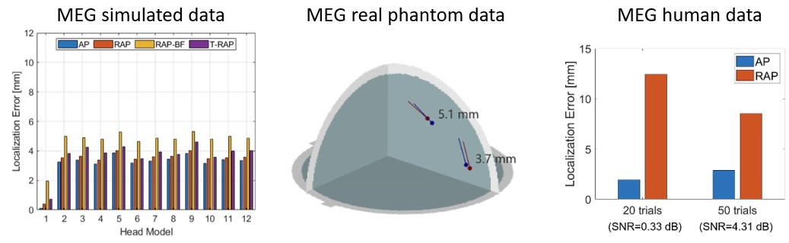

Localization of MEG and EEG Brain Signals by Alternating Projection
Amir Adler, Mati Wax, Dimitrios Pantazis
We present a novel solution to the problem of localizing magnetoencephalography (MEG) and electroencephalography (EEG) brain signals. The solution is sequential and iterative, and is based on minimizing the least-squares criterion by the Alternating Projection algorithm. Results from simulated and experimental MEG data from a human subject demonstrated robust performance, with consistently superior localization accuracy than scanning methods belonging to the beamformer and multiple-signal classification (MUSIC) families. Importantly, the proposed solution is more robust to forward model errors resulting from head rotations and translations, with a significant advantage in highly correlated sources.

MEG simulation and real phantom data and code to localize sources with the Alternating Projection (AP) algorithm are available here: Alternating Projection Code & Data
The phantom data were obtained from the MEG current phantom (Elekta-Neuromag) Brainstorm tutorial.
For more information see the related publication: TBD